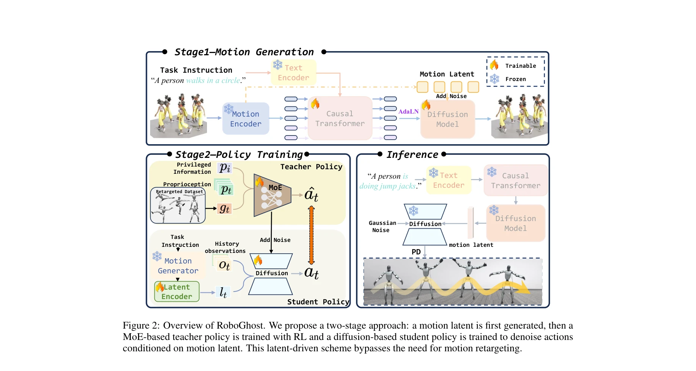

저자: Zhe Li, Cheng Chi, Yangyang Wei, Boan Zhu, Yibo Peng, Tao Huang, Pengwei Wang, Zhongyuan Wang, Shanghang Zhang, Chang Xu | 날짜: 2025-10-17 | DOI: 10.48550/arXiv.2510.14952
Essence

Figure 2: Overview of RoboGhost. We propose a two-stage approach: a motion latent is first generated, then a
RoboGhost는 언어 지시를 humanoid 로봇의 실행 가능한 동작으로 직접 변환하는 retargeting-free 프레임워크로, motion latent을 조건으로 하는 diffusion-based policy를 통해 기존의 다단계 파이프라인의 누적 오류와 지연을 제거한다.
Evaluation
Novelty: 4/5 Technical Soundness: 4/5 Significance: 4/5 Clarity: 4/5 Overall: 4/5
총평: RoboGhost는 language-guided humanoid 제어의 근본적인 파이프라인 재설계를 통해 기존의 다단계 접근의 한계를 효과적으로 해결하며, 실제 로봇 배포에서 우수한 성능을 입증한 매우 영향력 있는 연구이다. 다만 해석성 강화와 복잡한 task로의 확장이 후속 과제로 남아있다.